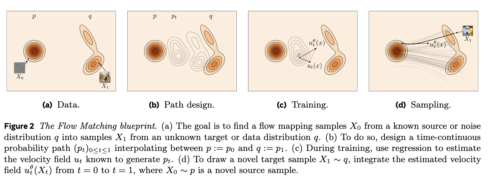
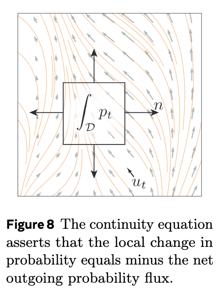
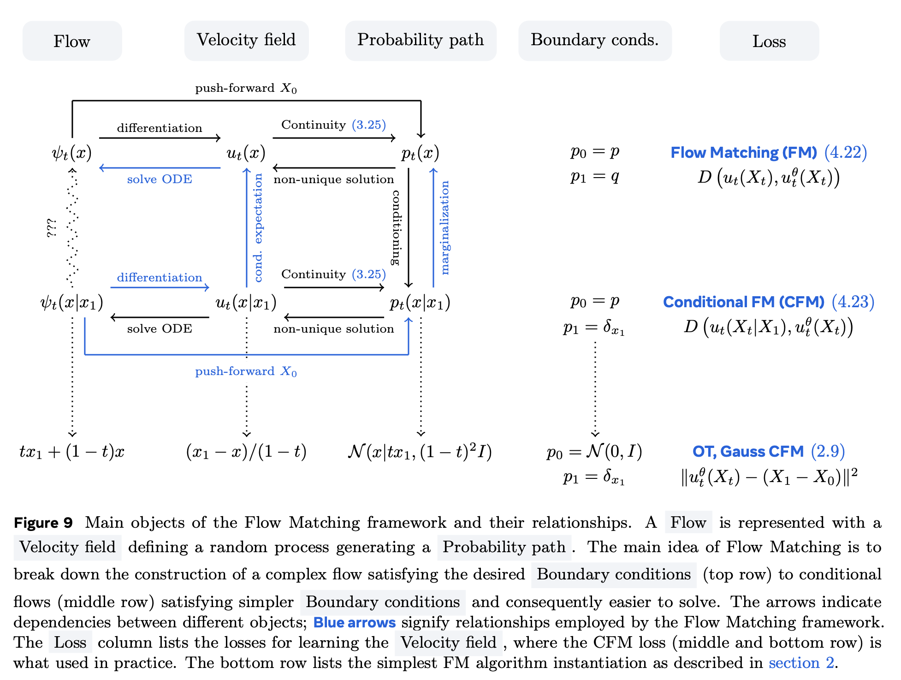
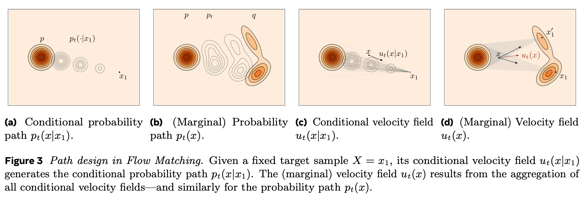
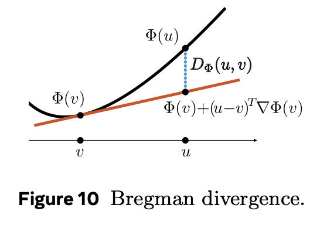
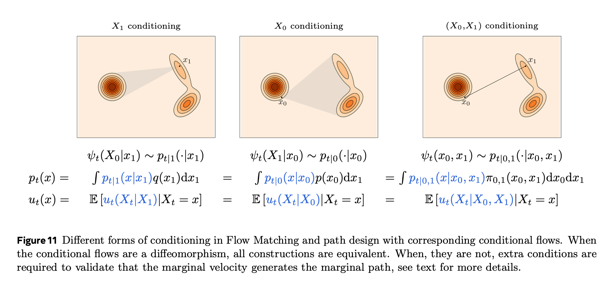
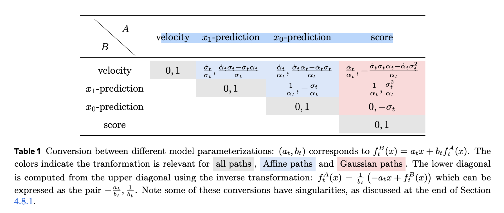

Section B — Flow Matching as the default protagonist¶
Thesis opener (to avoid confusion). Flow models borrow the mathematical language of classical transport/fluids (vector fields, continuity, trajectories). They are not claiming that “images behave like fluids” in any physical sense. (for now...)
- Why it still matters for image generation:
- An image is just a point \(x\in\mathbb{R}^d\) (a very high-dimensional coordinate), and a dataset defines a distribution \(p_\text{data}(x)\).
- Generative modeling can be phrased as moving probability mass from a simple base distribution to \(p_\text{data}\).
- A time-dependent vector field \(v_\theta(x,t)\) provides a deterministic “transport plan” for that mass; sampling is integrating an ODE.
- Intuition is basically:
- If there exists a well-posed deterministic flow \(\psi_{0\to 1}\) (generated by an ODE) such that \(p_\text{data} = (\psi_{0\to 1})_\# p_0\), then generation can be done by ODE integration—noise and SDEs are optional modeling/training choices, not a requirement. and the moving path is like the path of the missile.
- The connection to fluids is conceptual (transport/fields), not semantic (“water-like images”).
- The payoff is a clean, classical, deterministic backbone; we add stochasticity later only when we choose to.
B0. Section goal¶
- Treat flow/ODE as the mainline
- Training = learn a vector field
- Sampling = numerical integration (Euler/Heun/RK)

Interlude \(\alpha\) — Year 1757¶
B1. Flow Model¶
We define \(\mathbf{x}\) as a random vector, i.e., a random variable taking values in \(\mathbb{R}^d\). This narrows the scope of “random variable” to the Euclidean setting, which is the convenient regime for the mathematical discussion that follows (e.g., addition, scalar multiplication, and density/flow-based transformations).
In this post, we stick to this convention and represent our data (images) as vectors in \(\mathbb{R}^d\). This is mainly a modeling choice rather than a conceptual departure: the intuition is the same as treating an image as a point in a high-dimensional space, which is standard in much of the generative modeling literature.
A notation we will use frequently is the expectation. If \(\mathbf{x}\) has density \(p\) on \(\mathbb{R}^d\) and \(f:\mathbb{R}^d\to\mathbb{R}\) is integrable, we define:
Another recurring object is the conditional expectation. A good engineering way to read \(\mathbb{E}[\mathbf{x}\mid \mathbf{y}]\) is: use \(\mathbf{y}\) to predict \(\mathbf{x}\), and choose the predictor that minimizes mean squared error. Concretely, given two \(\mathbb{R}^d\)-valued random vectors \(\mathbf{x}\) and \(\mathbf{y}\), define the best approximating function \(g_\star\) in the least-squares sense:
We will write densities without subscripts (e.g., \(p(x,y)\), \(p(x\mid y)\), \(p(y)\)) when the meaning is clear from context. For \(y\in\mathbb{R}^d\) such that \(p(y)>0\), the conditional expectation function is then:
B1.1. Prerequisites: smoothness, Lipschitzness, and ODE order¶
Before we talk about diffeomorphisms and push-forward maps, it helps to keep three easy-to-mix concepts separate.
- Smoothness is a property of a function of \(x\) (e.g., \(T(x)\) or \(u(x,t)\)), not a property of “the space \(\mathbb{R}^d\)”. Not every function can be differentiated indefinitely (e.g., \(|x|\) is not differentiable at \(x=0\)). In many flow-model derivations we assume \(C^1\) regularity in \(x\) so that Jacobians / divergences are well-defined and change-of-variables statements are clean.
- Second-order dynamics can be rewritten as a first-order system by augmenting the state. For example, \(\ddot x(t)=a(x(t),\dot x(t),t)\) becomes a first-order system by introducing \(w(t)=\dot x(t)\) and treating \((x(t),w(t))\) as the state.
Finally, a regularity condition that shows up repeatedly for ODEs is local Lipschitzness (in \(x\)).
A function \(f:\mathbb{R}^d\to\mathbb{R}^m\) is locally Lipschitz if for every compact set \(K\subset\mathbb{R}^d\) there exists a constant \(L_K<\infty\) such that for all \(x,x'\in K\), $$ \lVert f(x)-f(x')\rVert \le L_K\,\lVert x-x'\rVert. \tag{4} $$
Intuition: on any bounded region, \(f\) cannot change “too fast”. For ODEs \(\dot x=u(x,t)\), local Lipschitzness of \(u(\cdot,t)\) (together with mild conditions in \(t\)) is a standard way to guarantee well-posed trajectories (in particular, uniqueness).
B1.2. Diffeomorphisms and push-forward maps (definitions)¶
At a high level, a (normalizing) flow model does two things:
- It applies a deterministic map \(T\) to points \(x\in\mathbb{R}^d\).
- It tracks how this map moves probability mass, i.e., how a distribution changes under \(T\).
These are captured by two standard notions: diffeomorphisms (nice invertible maps) and push-forward maps (how a map acts on distributions).
Diffeomorphism (a “nice” invertible map)¶
Let \(U,V\subseteq\mathbb{R}^d\) be open sets. A map \(T:U\to V\) is a \(C^1\)-diffeomorphism if it is bijective, continuously differentiable, and its inverse is also continuously differentiable:
Intuition: \(T\) can stretch / compress / warp space, but it does not tear it or fold distinct points onto the same point. In flow-based generative modeling, this “invertible and differentiable” structure is what makes likelihood tracking possible.
Push-forward (how a map acts on distributions)¶
Suppose \(\mathbf{x}\) is a random vector on \(\mathbb{R}^d\) with distribution \(p\), and we define a new random vector \(\mathbf{y}=T(\mathbf{x})\). The distribution of \(\mathbf{y}\) is called the push-forward of \(p\) by \(T\), written \(T_\# p\) (this is the “\(\#\)” symbol you saw). Formally, for any measurable set \(A\subseteq\mathbb{R}^d\),
This definition says: “the probability that \(\mathbf{y}\) lands in \(A\) equals the probability that \(\mathbf{x}\) lands in the preimage \(T^{-1}(A)\).”
If densities exist: change of variables¶
When \(p\) admits a density \(p(x)\) and \(T\) is a \(C^1\)-diffeomorphism, the push-forward distribution \(q:=T_\# p\) also admits a density \(q(y)\) given by the change-of-variables formula:
Equivalently, writing \(y=T(x)\),
This is the basic “bookkeeping rule” behind likelihood-based flows: a flow model specifies \(T\), samples via \(\mathbf{y}=T(\mathbf{x})\), and computes log-likelihoods by tracking the Jacobian determinant (or its continuous-time analogue).
Interpretation (Of “\(\#\)” ). The push-forward \(T_\# p\) is a measure-theoretic notion: it describes how the entire probability distribution \(p\) changes when we transform samples by \(T\). In likelihood-based flow models, we typically choose a simple base distribution \(p_0\) and parameterize \(T\) (e.g., \(T=T_\theta\)), so the model distribution is \(q_\theta := (T_\theta)_\# p_0\). Training by maximum likelihood then adjusts \(\theta\) so that \(q_\theta\) assigns high likelihood to real data—informally, it “pushes” the model distribution toward the data distribution.
It is helpful to view this as two layers: push-forward is the modeling viewpoint (how a map \(T\) acts on distributions), while likelihood is one possible training objective for selecting parameters \(\theta\) after choosing a parameterized family \(T_\theta\). The push-forward construction itself does not require likelihood; the same viewpoint can be paired with other fitting criteria (e.g., adversarial objectives, moment matching, or flow/score matching).
B1.3. Flows and velocity fields¶
So far, we have discussed a single map \(T\). A flow generalizes this to a time-indexed family of maps \(\psi_t\), generated by a time-dependent velocity field \(u_t\).
A \(C^r\) flow \(\psi\) can be defined in terms of a \(C^r([0,1]\times\mathbb{R}^d,\mathbb{R}^d)\) velocity field \(u:[0,1]\times\mathbb{R}^d\to\mathbb{R}^d\), written as \(u(t,x)=u_t(x)\), via the following ODE:
with initial condition
Intuition: at each time \(t\), the vector \(u_t(x)\) tells you which direction the point at location \(x\) should move next, and \(\psi_t(x)\) is “where \(x\) ends up” after flowing for time \(t\).
Local existence, uniqueness, and when \(\psi_t\) is a diffeomorphism¶
A standard result from ODE theory is: if \(u\) is \(C^r\) in \((t,x)\) with \(r\ge 1\) (in particular, locally Lipschitz in \(x\)), then the ODE above has a unique local solution, and \(\psi_t(\cdot)\) is a \(C^r\) diffeomorphism on its domain of definition (for each fixed \(t\)). This guarantees local existence/uniqueness: solutions may still blow up in finite time unless we assume more (e.g., global Lipschitzness or other growth/integrability conditions). Later we will rely on conditions that guarantee the flow exists almost everywhere up to \(t=1\).
Flow \(\Rightarrow\) distribution transport¶
If \(\mathbf{x}_0\sim p_0\) and \(\mathbf{x}_t := \psi_t(\mathbf{x}_0)\), then the marginal distribution at time \(t\) is the push-forward
When densities exist, this viewpoint leads directly to the continuity equation, which will serve as a backbone for both diffusion- and flow-based generative models.
Flow \(\Leftrightarrow\) velocity field¶
Conversely, given a \(C^1\) flow \(\psi_t\), one can recover its (unique) defining velocity field by using invertibility. Differentiating \(\psi_t(x')\) and setting \(x'=\psi_t^{-1}(x)\) gives
In conclusion: (under suitable regularity) flows \(\psi_t\) and velocity fields \(u_t\) are equivalent ways to represent the same deterministic transport. In ML we often parameterize \(u_t\) by a neural network (e.g., \(u_t(x)\approx v_\theta(x,t)\)).
B1.4. Probability paths and the continuity equation¶
The flow viewpoint above (\(\mathbf{x}_t=\psi_t(\mathbf{x}_0)\)) is a convenient sufficient way to generate a family of distributions \((p_t)_{t\in[0,1]}\). However, it is not the most general way to think about “moving probability mass”.
Probability path = a time-indexed family of distributions¶
A probability path is simply a family of distributions \((p_t)_{t\in[0,1]}\) on \(\mathbb{R}^d\) that interpolates between \(p_0\) and \(p_1\). You can view it as a “movie of densities”.
- In the flow-induced case, \(p_t=(\psi_t)_\# p_0\) as in \(\tag{11}\).
- More generally, one can specify \((p_t)\) without specifying a global deterministic map \(\psi_t\) (e.g., stochastic dynamics, mixture paths, or paths defined via couplings).
In Flow Matching, it is common to build a probability path by choosing a coupling \(\pi\) between endpoints and an interpolation map \(\gamma_t\):
- Sample \((\mathbf{x}_0,\mathbf{x}_1)\sim \pi\) where the marginals are \(p_0\) and \(p_1\).
- Define an interpolation \(\gamma_t:\mathbb{R}^d\times\mathbb{R}^d\to\mathbb{R}^d\), e.g., \(\gamma_t(x_0,x_1)=(1-t)x_0+t x_1\).
- Let \(\mathbf{x}_t:=\gamma_t(\mathbf{x}_0,\mathbf{x}_1)\). Then \(p_t\) is the push-forward of \(\pi\) under \(\gamma_t\).
This “path-first” viewpoint is one reason Flow Matching can be presented without starting from a likelihood objective.
When do we say a velocity field “generates” a probability path?¶
The guide makes a useful distinction: given an arbitrary probability path \((p_t)\), we say a velocity field \(u_t\) generates \((p_t)\) if, when we solve the flow ODE \(\frac{d}{dt}\psi_t(x)=u_t(\psi_t(x))\) and set \(\mathbf{x}_t:=\psi_t(\mathbf{x}_0)\) with \(\mathbf{x}_0\sim p_0\), the marginal law of \(\mathbf{x}_t\) is exactly \(p_t\) for every \(t\in[0,1)\).
The interval is often written as \([0,1)\) (open on the right) to handle cases where the target \(p_1\) has compact support and the velocity field is not well-defined exactly at \(t=1\).
Operationally: to check whether \(u_t\) generates a given \((p_t)\), you do not need to reason about particles \(\mathbf{x}_t\) directly—you can verify a PDE.
The continuity equation (conservation of probability)¶
If a probability path \((p_t)\) is transported by a (sufficiently regular) velocity field \(u_t\), then \(p_t\) must satisfy the continuity equation
Interpretation: probability is neither created nor destroyed; it only moves with velocity \(u_t\).
It is often convenient to name the probability flux
so \(\tag{13}\) becomes \(\partial_t p_t + \nabla\cdot j_t=0\).
Where does \(\tag{13}\) come from? It is the differential form of a conservation law.
(1) Notation note: \(\partial\) is overloaded. The symbol \(\partial\) is used in two different ways in this section:
- \(\partial_t p_t(x)\) means a partial derivative with respect to time \(t\).
- \(\partial\Omega\) means the boundary of the region \(\Omega\) (a geometric object), not a derivative.
In \(\tag{13b}\), \(\Omega\subset\mathbb{R}^d\) is any fixed region, \(\partial\Omega\) is its boundary, \(n(x)\) is the outward unit normal on \(\partial\Omega\), and \(dS\) is the \((d-1)\)-dimensional surface-area element. The derivative \(\frac{d}{dt}\int_{\Omega} p_t(x)\,dx\) is taken with respect to time \(t\) (the set \(\Omega\) is fixed); it measures how the total probability mass inside \(\Omega\) changes over time.
(2) The key equivalence is the divergence theorem. For a smooth vector field \(F:\mathbb{R}^d\to\mathbb{R}^d\),
This is the mathematical statement that connects “what happens inside a volume” to “what flows through its boundary”. Taking \(F(x)=p_t(x)\,u_t(x)\) turns \(\tag{13c}\) into \(\tag{13d}\).
Now the derivation is a sequence of standard “accounting” steps:
1) Convert the boundary flux to a volume integral (divergence theorem):
2) Move the time derivative inside the integral (for a fixed \(\Omega\) and regular enough \(p_t\)):
3) Combine the two to get an integral identity over \(\Omega\):

4) Localize: since \(\Omega\) is arbitrary, the only way this integral can be zero for every region is that the integrand vanishes (almost everywhere), which yields \(\tag{13}\).
This is exactly the same derivation as in classical fluid mechanics, with \(p_t\) playing the role of density \(\rho\) and \(u_t\) playing the role of velocity \(v\). The key difference is interpretational: in generative modeling, \(u_t\) is a learned transport field for probability mass, not a physically constrained fluid velocity (we do not impose momentum balance or an equation of state unless we explicitly do physics-informed modeling).
Equivalently, rearranging \(\tag{13}\), the continuity equation can be read as an explicit “density update rule” \(\partial_t p_t(x) = -\nabla\cdot\big(p_t(x)\,u_t(x)\big)\), which emphasizes that local density changes are fully determined by the divergence of the probability flux \(p_t u_t\) (not merely by \(\nabla\cdot u_t\)).
A “mass conservation” equivalence (PDE \(\Leftrightarrow\) generated path)¶
Under mild regularity assumptions (in the guide: \(u_t\) locally Lipschitz in \(x\) and an integrability condition), the following two statements are equivalent:
1) The pair \((p_t,u_t)\) satisfies the continuity equation \(\tag{13}\) for \(t\in[0,1)\).
2) The velocity field \(u_t\) generates the probability path \((p_t)\) via the flow ODE (i.e., \(\mathbf{x}_t=\psi_t(\mathbf{x}_0)\sim p_t\)).
The integrability condition can be written as a finite expected speed along the path:
It also makes the flow ODE meaningful in integral form:
which is often the cleanest way to see why additional assumptions beyond local Lipschitzness may be needed to guarantee existence all the way up to \(t=1\).
Weak form (often the cleanest statement)¶
For a smooth test function \(\varphi:\mathbb{R}^d\to\mathbb{R}\) with sufficient decay, \(\tag{13}\) is equivalent to
This is just integration by parts applied to \(\tag{13}\). It is also the cleanest way to define solutions when \(p_t\) is not smooth.
Characteristics: the particle view recovers the PDE¶
If \(\mathbf{x}_t\) follows the ODE \(\dot{\mathbf{x}}_t=u_t(\mathbf{x}_t)\) and its law is \(p_t\), then \(\tag{13}\) describes how that law evolves. Conversely, when \(\tag{13}\) holds and \(u_t\) is regular enough, one can interpret \(\mathbf{x}_t\) as “particles” moving with velocity \(u_t\), whose density is \(p_t\).
Log-density along a trajectory (connects to likelihood bookkeeping)¶
Assume \(p_t\) is differentiable and strictly positive on the region of interest. Along a trajectory \(t\mapsto x(t)\) that solves \(\dot x(t)=u_t(x(t))\), the continuity equation implies
This identity is the infinitesimal form of change-of-variables: it is the term that becomes the “\(-\mathrm{div}\)” contribution in continuous normalizing flows.
B1.5. Instantaneous change of variables¶
The change-of-variables rule \(\tag{7}\)–\(\tag{8}\) tells us how densities transform under a single diffeomorphism \(T\). In continuous time, the transformation from \(t=0\) to \(t=1\) is built from infinitesimal diffeomorphisms along the flow \(\psi_t\). The resulting bookkeeping identity is usually called the instantaneous change of variables (ICoV).
Jacobian dynamics¶
Assume \(\psi_t\) is generated by the velocity field \(u_t\) as in \(\tag{9}\)–\(\tag{10}\), and \(\psi_t(\cdot)\) is differentiable in \(x\). Let \(J_t(x):=\nabla\psi_t(x)\in\mathbb{R}^{d\times d}\) denote the Jacobian of the flow map. Differentiating \(\psi_t\) with respect to \(x\) gives the Jacobian ODE
Taking the log-determinant and using \(\frac{d}{dt}\log\det J_t = \mathrm{Tr}\big(J_t^{-1}\frac{d}{dt}J_t\big)\), we obtain
Density dynamics along the flow (the ICoV formula)¶
Let \(\mathbf{x}_0\sim p_0\) and \(\mathbf{x}_t=\psi_t(\mathbf{x}_0)\) so that \(p_t=(\psi_t)_\#p_0\) as in \(\tag{11}\). When densities exist, the discrete change-of-variables formula applied to \(\psi_t\) reads
Differentiating \(\log p_t(\psi_t(x)) + \log|\det\nabla\psi_t(x)|\) in time and using \(\tag{17}\) yields exactly the along-trajectory identity \(\tag{15}\):
Integrating \(\tag{19}\) gives the practical likelihood bookkeeping rule used in continuous normalizing flows:
This is why “divergence of the velocity field” is the continuous-time analogue of the log-Jacobian determinant in ordinary normalizing flows.
B2. Flow Matching¶

B-fig9. Flow Matching training pipeline (high level).
Given a known source distribution \(p\) and a target (data) distribution \(q\), Flow Matching (FM) trains a flow model by learning a time-dependent velocity field \(u_{\theta,t}(x)\). The goal is to learn a velocity field whose induced flow transports probability mass along a prescribed probability path \((p_t)_{t\in[0,1]}\) from \(p_0=p\) to \(p_1=q\):
Revisiting the FM blueprint (B-fig9): (a) pick a known source \(p\) and an unknown data target \(q\); (b) prescribe an interpolation path \(p_t\) from \(p\) to \(q\); (c) learn a neural velocity field \(u_{\theta,t}\) that generates that path; and (d) sample by solving an ODE using the learned \(u_{\theta,t}\).
To learn \(u_{\theta,t}\), FM minimizes a regression loss that matches \(u_{\theta,t}\) to a “ground-truth” velocity field \(u_t\) known to generate the chosen probability path \(p_t\):
A common choice is the squared \(\ell_2\) distance
Data pairs, couplings, and why FM feels supervised¶
FM often looks like supervised learning because we end up with training tuples of the form \((t,\mathbf{x}_t,\text{target velocity})\), and we regress \(u_{\theta,t}(\mathbf{x}_t)\) to that target using an \(\ell_2\) loss.
Where do those “labels” come from? They are not human annotations. They come from a chosen coupling \(\pi\) between the endpoints:
- draw a source sample \(\mathbf{x}_0\sim p\)
- draw a data sample \(\mathbf{x}_1\sim q\)
- pair them into \((\mathbf{x}_0,\mathbf{x}_1)\sim\pi\)
This pairing is the key modeling choice. In most generative settings, there is no natural one-to-one correspondence between a particular \(\mathbf{x}_0\) and a particular data point \(\mathbf{x}_1\), so \(\pi\) is synthetic (e.g., independent coupling \(\pi=p\otimes q\), or a more structured/OT-inspired coupling). The coupling determines what “teacher signal” FM will produce.
Building a probability path from a coupling¶
Given a coupling \(\pi\) and an interpolation map \(\gamma_t:\mathbb{R}^d\times\mathbb{R}^d\to\mathbb{R}^d\), we define

Then the probability path is simply the law of \(\mathbf{x}_t\):
A minimal (and very common) choice is linear interpolation \(\gamma_t(x_0,x_1)=(1-t)x_0+t x_1\), but other paths are possible and can change the learning dynamics.
From a path to a generating velocity field¶
Along a paired trajectory \(t\mapsto \gamma_t(x_0,x_1)\), there is an obvious “pairwise” velocity:
However, a generating velocity field \(u_t(x)\) must be a function of \((t,x)\) alone (it cannot depend on the hidden pair \((x_0,x_1)\)). The standard construction is to take a conditional expectation with respect to the induced \(\mathbf{x}_t\):
Intuition: many different endpoint pairs can pass through the same intermediate location \(x\) at time \(t\); \(\tag{27}\) says the “best” single-valued velocity field at \((t,x)\) (in the least-squares sense) is the conditional mean of those pairwise velocities. This is exactly why we introduced conditional expectation as “the best predictor under MSE”.
With \(\tag{27}\) in hand, \(\mathcal{L}_{\mathrm{FM}}\) in \(\tag{22}\) becomes a standard regression objective: sample \(t\), sample a pair \((\mathbf{x}_0,\mathbf{x}_1)\sim\pi\), form \(\mathbf{x}_t=\gamma_t(\mathbf{x}_0,\mathbf{x}_1)\), compute (or approximate) the target \(u_t(\mathbf{x}_t)\), and fit \(u_{\theta,t}\) to it.
B2.1. Deriving generating velocity fields¶
- \(p_t(x)\) is typically a mixture distribution whose density is not available in closed form;
- \(p_{t\mid 1}(x\mid x_1)\) is a family of simple conditional distributions (usually chosen to be analytically tractable and easy to sample from, e.g. Gaussians);
- the generating velocity field \(u_t(x)\) is the posterior-weighted average of a “conditional velocity” \(u_t(x\mid x_1)\) under \(p_{1\mid t}(x_1\mid x)\).
Continuing from the previous subsection’s notation \((\mathbf{x}_0,\mathbf{x}_1)\sim\pi\) and \(\mathbf{x}_t=\gamma_t(\mathbf{x}_0,\mathbf{x}_1)\), it is often convenient to denote the “intermediate distribution given the endpoint \(x_1\)” by \(p_{t\mid 1}(\cdot\mid x_1)\) (with the randomness of \(\mathbf{x}_0\) understood to have been marginalized out).
More concretely, let \(\mathbf{x}_1\sim p_1\) (the endpoint distribution, usually the data distribution), and for each \(t\in[0,1]\) specify a conditional family \(p_{t\mid 1}(x\mid x_1)\), meaning the distribution of \(\mathbf{x}_t\) given \(\mathbf{x}_1=x_1\). The marginal distribution is then
Since \(\tag{28}\) is a mixture (an integral over \(x_1\)), \(p_t(x)\) generally does not admit a closed-form expression. Suppose that for each fixed \(x_1\) we have a (relatively simple) conditional velocity field \(u_t(\cdot\mid x_1)\) that generates the conditional path \((p_{t\mid 1}(\cdot\mid x_1))_{t\in[0,1]}\) (e.g. by satisfying the corresponding continuity equation). Then the global (marginal) generating velocity field is the posterior average of these conditional velocities:
where the posterior weight is given by Bayes’ rule:
Insight (constraint vs. construction). The continuity equation \(\tag{13}\) is simultaneously (i) a dynamical constraint—a necessary condition that any pair \((p_t,u_t)\) must satisfy if \(u_t\) is to generate the path \((p_t)\)—and (ii) the bridge that ties together “density evolution” (\(p_t\)) and “transport field” (\(u_t\)). In classical PDE language one often solves \(\partial_t p_t + \nabla\cdot(p_t u_t)=0\) for \(p_t\) given \(u_t\) and an initial condition \(p_0\). In Flow Matching we frequently take the opposite stance: we construct a probability path \((p_t)\) (e.g. via a coupling \(\pi\) and an interpolation \(\gamma_t\)) and then build a generating field \(u_t\) that satisfies the constraint. This perspective also highlights a non-uniqueness: for a fixed path \((p_t)\), there can be many velocity fields \(u_t\) that satisfy \(\tag{13}\); FM’s “conditional expectation” recipe \(\tag{27}\) is one principled way to pick a single-valued \(u_t(x)\) from latent pairwise velocities.
B2.2. General conditioning and the Marginalization Trick¶
In the previous subsection, the conditioning variable was the endpoint \(\mathbf{x}_1\) (so we wrote \(p_{t\mid 1}(x\mid x_1)\)). More generally, we can condition the path on an arbitrary auxiliary random variable \(\mathbf{Z}\) taking values in some space \(\mathcal{Z}\). Concretely, for each \(t\in[0,1]\) and \(z\in\mathcal{Z}\), suppose we specify a simple conditional distribution \(p_{t\mid Z}(x\mid z)\). The resulting marginal path is the mixture over \(\mathbf{Z}\):
with the integral understood in the appropriate sense (sum / integral) depending on the law of \(\mathbf{Z}\).
Insight. This “general conditioning” viewpoint simply enlarges the previous construction: \(\mathbf{Z}\) does not have to be \(\mathbf{x}_1\); it can be any variable that indexes a convenient family of conditional paths.
Marginalization trick: from conditional velocities to a marginal (generating) velocity¶
Assume that for each \(z\in\mathcal{Z}\), the conditional density \(p_{t\mid Z}(\cdot\mid z)\) is transported by a conditional velocity field \(u_t(\cdot\mid z)\) in the sense of the continuity equation:
Multiply \(\tag{32}\) by \(p_Z(z)\) and integrate over \(z\). Under mild regularity that justifies swapping \(\partial_t\) / \(\nabla\cdot\) with the \(z\)-integral, we obtain
where we used \(\tag{31}\) to identify \(p_t(x)=\int p_{t\mid Z}(x\mid z)p_Z(z)\,dz\). Equation \(\tag{33}\) is again a continuity equation for the marginal path \((p_t)\), with probability flux
Whenever \(p_t(x)>0\), we can therefore define the marginal (generating) velocity field \(u_t(x)\) via \(j_t(x)=p_t(x)\,u_t(x)\), i.e.
Now apply Bayes’ rule to form the posterior over the conditioning variable at time \(t\):
Substituting \(\tag{36}\) into \(\tag{35}\) yields the advertised “posterior-weighted average” form:
This is the general version of the earlier special case \(\mathbf{Z}=\mathbf{x}_1\).
Why \(\ell_2\) regression recovers this conditional expectation¶
Fix \(t\in[0,1]\) and consider the regression viewpoint with \(X:=\mathbf{X}_t\in\mathbb{R}^d\) as the observed input and \(Y:=u_t(\mathbf{X}_t\mid \mathbf{Z})\in\mathbb{R}^d\) as the “label” (a random vector because \(\mathbf{Z}\) is latent given \(X\)). For any measurable \(g:\mathbb{R}^d\to\mathbb{R}^d\) with \(\mathbb{E}\|Y-g(X)\|^2<\infty\), the minimizer of
is
Therefore, the population-optimal \(\ell_2\) regressor implied by the conditional-velocity construction is exactly the marginal velocity \(\tag{37}\):
Note (why not \(\ell_1\)). In 1D, \(\ell_1\) regression returns a (conditional) median, not a mean:
since the optimality condition is the subgradient balance \(\mathbb{P}(Y\le g\mid X=x)\ge \tfrac12\) and \(\mathbb{P}(Y\ge g\mid X=x)\ge \tfrac12\). For an empirical 1D sample, the minimizer is the usual median (odd \(n\): one observed instance; even \(n\): any point between the two middle instances).
The marginalization trick above is fundamentally linear: mixing conditional solutions mixes their fluxes, which yields the posterior mean \(u_t(x)=\mathbb{E}[u_t(x\mid \mathbf{Z})\mid \mathbf{X}_t=x]\). The mean is linear; the median is not. So swapping \(\ell_2\) for \(\ell_1\) generally selects an order-statistic-type field (a median of conditional velocities) rather than a linear mixture, and need not satisfy the continuity equation for the prescribed \(p_t\).
Note (what is linear in the continuity equation). The continuity equation \(\partial_t p_t + \nabla\cdot(p_t u_t)=0\) is linear in \((p_t,j_t)\) when written in flux form, where \(j_t := p_t u_t\):
It is not linear in \(u_t\) itself, since \(u_t=j_t/p_t\) is nonlinear. The marginalization step in Theorem 3 uses exactly this \((p,j)\)-linearity plus the ability to interchange \(\partial_t\) and \(\nabla\cdot\) with the \(z\)-integral (justified by the regularity / integrability assumptions): define \(p_t(x)=\int p_{t\mid Z}(x\mid z)\,p_Z(z)\,dz\) and \(j_t(x)=\int j_{t\mid Z}(x\mid z)\,p_Z(z)\,dz\) with \(j_{t\mid Z}:=p_{t\mid Z}u_t(\cdot\mid z)\), then integrating \(\partial_t p_{t\mid Z}+\nabla\cdot j_{t\mid Z}=0\) over \(z\) yields \(\partial_t p_t+\nabla\cdot j_t=0\).
As a related aside: the (forward) Fokker–Planck equation for an SDE is also linear in \(p\), even though it contains a second-order term. In one common notation,
so the key issue is not “first-order vs. second-order”, but whether the PDE is linear in the density.
In this sense, both Flow Matching (deterministic transport; first-order generator) and Diffusion (stochastic dynamics; second-order generator) fit the same generator-based template: the induced density evolution equation is linear in \(p\).
Summary (two theorems glued together, not a coincidence).
- (PDE / marginalization) If each conditional path \((p_{t\mid Z}(\cdot\mid z))\) is generated by \(u_t(\cdot\mid z)\), then the marginal path \((p_t)\) is generated by the posterior average \(u_t(x)=\mathbb{E}[u_t(x\mid \mathbf{Z})\mid \mathbf{X}_t=x]\).
- (Projection / \(\ell_2\) optimality) The minimizer of an \(\ell_2\) regression loss is the conditional expectation \(\mathbb{E}[Y\mid X]\).
- Putting them together: FM (i) identifies the marginal generating velocity as a conditional expectation, and (ii) uses \(\ell_2\) regression whose population optimum is exactly that conditional expectation.
Why do we condition? (Turning an implicit target into supervised data)¶
At the level of the generator’s structure, the object we ultimately want is the marginal generating velocity \(u_t(x)\) in \(\tag{37}\). But \(u_t(x)\) is typically not directly labelable: evaluating it at a given \(x\) requires the posterior integral \(\int u_t(x\mid z)\,p_{Z\mid t}(z\mid x)\,dz\), and \(p_{Z\mid t}(z\mid x)\) involves the intractable marginal \(p_t(x)\) in the denominator \(\tag{36}\). So even if we can write down (and sample from) the conditional mechanism \(p_{t\mid Z}(\cdot\mid z)\) and compute \(u_t(\cdot\mid z)\), we usually cannot form “ground-truth” pairs \((x, u_t(x))\).
Conditional Flow Matching resolves this by manufacturing supervised training pairs from the conditional world:
- sample a time \(t\),
- sample a latent \(z\sim p_Z\),
- sample an intermediate state \(x_t\sim p_{t\mid Z}(\cdot\mid z)\),
- compute the tractable conditional label \(y := u_t(x_t\mid z)\),
- regress a model \(g(x,t)\) on pairs \((x_t,t)\mapsto y\) using an \(\ell_2\) loss.
The “supervised learning essence” is that conditioning turns an implicit marginal target into an explicit random label \(Y=u_t(\mathbf{X}_t\mid \mathbf{Z})\) paired with an observable input \(X=\mathbf{X}_t\). Then the standard \(\ell_2\) projection theorem \(\tag{39}\) guarantees that, at the population level,
so regressing conditional velocities automatically recovers the marginal velocity without ever explicitly computing the posterior weights \(p_{Z\mid t}(z\mid x)\).
Assumption 1. \(p_{t\mid Z}(x\mid z)\in C^1([0,1)\times\mathbb{R}^d)\) as a function of \((t,x)\), and \(u_t(x\mid z)\in C^1([0,1)\times\mathbb{R}^d,\mathbb{R}^d)\) as a function of \((t,x)\). Furthermore, \(p_Z\) has bounded support, i.e. there exists a bounded set \(K\subset\mathbb{R}^m\) such that \(p_Z(z)=0\) for all \(z\notin K\). Finally, \(p_t(x)>0\) for all \(x\in\mathbb{R}^d\) and \(t\in[0,1)\).
Theorem 3 (Marginalization Trick). Under Assumption 1, if \(u_t(x\mid z)\) is conditionally integrable and generates the conditional probability path \(p_t(\cdot\mid z)\), then the marginal velocity field \(u_t\) generates the marginal probability path \(p_t\), for all \(t\in[0,1)\).
What this theorem is really saying (and why it matters)¶
Theorem 3 proves a clean closure property of probability transport: if every conditional flow is valid, then the mixture flow is valid as well. Conceptually, you can think of having one “probability fluid” for each \(z\); each one obeys a conservation law; and since the conservation law is linear in the right variables, superposing (mixing) these fluids preserves conservation.
The key points behind the proof are:
- Linearity is in \((p,j)\), not in \(u\). The continuity equation is linear in density \(p\) and flux \(j:=p u\): \(\partial_t p+\nabla\cdot j=0\). It is not linear in \(u\) itself.
- Regularity survives mixing (under the stated assumptions). With \(p_{t\mid Z}(\cdot\mid z)\in C^1\) in \((t,x)\) and mild conditions that justify interchanging differentiation and integration in \(z\), the marginal \(p_t(x)=\int p_{t\mid Z}(x\mid z)p_Z(z)\,dz\) inherits the needed differentiability.
- Integrability is controlled by convexity / Jensen. Since the marginal velocity is a conditional expectation \(u_t(x)=\mathbb{E}[u_t(x\mid \mathbf{Z})\mid \mathbf{X}_t=x]\), Jensen gives \(\|u_t(x)\|\le \mathbb{E}[\|u_t(x\mid \mathbf{Z})\|\mid \mathbf{X}_t=x]\), which helps ensure the expected speed condition (e.g. \(\int_0^1\!\int \|u_t(x)\|p_t(x)\,dx\,dt<\infty\)) whenever the conditional one is integrable.
Flow Matching takeaway. This is the theoretical hinge that lets us go from conditionally supervised training signals \(u_t(x_t\mid z)\) to an unconditional global ODE sampler: conditional flow matching can be marginalized into a single velocity field that transports the marginal path.
The path of implications .
- CE is linear in \((p,j)\).
- Each conditional flow \((p_{t\mid Z}(\cdot\mid z), j_{t\mid Z}(\cdot\mid z))\) satisfies CE.
- Mixing over \(z\) preserves CE, so the marginal \((p_t,j_t)\) satisfies CE.
- Under the usual boundary/decay assumptions, CE implies global mass conservation \(\int p_t=1\).
Why \(\int_\Omega \nabla\cdot(\cdot)\,dx\) becomes a boundary term (and when it vanishes)¶
Start from the continuity equation, most transparently written in flux form. Let \(p_t:\mathbb{R}^d\to\mathbb{R}_{\ge 0}\) be a density and \(u_t:\mathbb{R}^d\to\mathbb{R}^d\) a velocity field, and define the probability flux \(j_t(x):=p_t(x)\,u_t(x)\). The continuity equation is
Let \(\Omega\subset\mathbb{R}^d\) be a region with piecewise smooth boundary \(\partial\Omega\), outward unit normal \(n(x)\), and surface-area element \(dS\). Integrating over \(\Omega\) and (under sufficient regularity) moving \(\partial_t\) inside the integral gives
The key is the second term. The Gauss (divergence) theorem states that for any sufficiently smooth vector field \(F:\Omega\to\mathbb{R}^d\),
Taking \(F=j_t\) (i.e. \(F=p_t u_t\)) yields
Substituting into \(\tag{A2}\) gives the “mass balance / net flux” identity:
Interpretation: \(\int_\Omega p_t\) is the total probability mass inside \(\Omega\). The right-hand side is the net outward flux through \(\partial\Omega\). Hence the mass changes exactly by “minus net outflow”.
What does “the boundary term is zero” mean?¶
Common ways to make \(\int_{\partial\Omega} j_t\cdot n\,dS=0\) (think: different domain choices / boundary conditions) include:
- \(\Omega=\mathbb{R}^d\) with sufficient decay at infinity. Consider \(\Omega_R=\{x:\|x\|\le R\}\) and send \(R\to\infty\). If \(j_t(x)\) decays fast enough that \(\int_{\partial\Omega_R} j_t\cdot n\,dS\to 0\), the boundary contribution vanishes. Intuition: no probability mass flows in/out “from infinity”.
- Periodic boundary conditions (a torus / periodic box). Contributions from opposite faces cancel, so the net flux is zero.
- No-flux (reflecting / Neumann-type) boundary conditions. Impose
meaning probability mass cannot cross the boundary.
When the boundary term is zero, \(\tag{A5}\) reduces to \(\frac{d}{dt}\int_\Omega p_t(x)\,dx=0\), so the total mass \(\int_\Omega p_t(x)\,dx\) is conserved in time. In particular, if \(\int_\Omega p_0(x)\,dx=1\), then \(\int_\Omega p_t(x)\,dx=1\) for all \(t\).
B2.3. Flow Matching loss¶

B-fig10. Flow matching loss as a path-matching objective.
The key modeling stance is: Flow Matching matches a path, not just the final density. Instead of directly minimizing a discrepancy between \(p_1\) and some model density \(q_\theta\), FM matches the generator (a velocity field) along the prescribed intermediate marginals \((p_t)\). If \(u_{\theta,t}\) matches the true generating field \(u_t\) for \(t\in[0,1)\), then the ODE it defines transports mass along the intended path and reaches the desired endpoint.
At the loss level, this is written as an expected discrepancy between vectors \(u_{\theta,t}(x)\) and \(u_t(x)\), averaged over \(t\) and \(x\sim p_t\). A central class of losses is Bregman divergences: given a strictly convex, differentiable potential \(\Phi:\mathbb{R}^d\to\mathbb{R}\), define
Then the (population) flow matching loss is
The squared \(\ell_2\) loss is the special case \(\Phi(v)=\frac12\|v\|^2\), for which \(D_\Phi(a,b)=\frac12\|a-b\|^2\).
The only remaining question is: where do the labels \(u_t(\mathbf{X}_t)\) come from? In general, the marginal target \(u_t(x)\) is not directly computable because it is defined via a latent-variable marginalization (Theorem 3): it contains a posterior average over \(\mathbf{Z}\) given \(\mathbf{X}_t=x\).
Conditional Flow Matching (CFM): supervised labels from a latent variable¶
Assume we have a latent variable \(\mathbf{Z}\sim p_Z\), a conditional family \(p_{t\mid Z}(\cdot\mid z)\), and a tractable conditional velocity field \(u_t(\cdot\mid z)\) that generates \(p_{t\mid Z}(\cdot\mid z)\). Then we can construct supervised samples by:
- sample \(t\sim U[0,1]\),
- sample \(z\sim p_Z\),
- sample \(\mathbf{X}_t\sim p_{t\mid Z}(\cdot\mid z)\),
- set the label \(Y:=u_t(\mathbf{X}_t\mid z)\),
- regress \(u_{\theta,t}(\mathbf{X}_t)\) onto \(Y\).
This yields the conditional flow matching objective:
Even though \(\mathcal{L}_{\mathrm{FM}}\) in \(\tag{42}\) is generally not directly computable (because it depends on the intractable marginal velocity \(u_t\)), CFM is designed so that it has the same gradient signal under a Bregman loss.
Theorem 4 (Gradient equivalence). Under suitable regularity, for Bregman divergences \(D_\Phi\) one has $$ \nabla_\theta \mathcal{L}{\mathrm{FM}}(\theta) \;=\; \nabla\theta \mathcal{L}_{\mathrm{CFM}}(\theta). \tag{44} $$
Proof sketch (the “Bregman magic”). For fixed \(t\) and \(x\), write the marginal target as a conditional expectation \(u_t(x)=\mathbb{E}[u_t(x\mid \mathbf{Z})\mid \mathbf{X}_t=x]\). The key identity is that the gradient of a Bregman divergence is affine in its first argument:
so for any \(\alpha,\beta\in\mathbb{R}\) with \(\alpha+\beta=1\) and any \(u_1,u_2,v\in\mathbb{R}^d\),
and, more generally, for any integrable random vector \(Y\in\mathbb{R}^d\),
so \(\nabla_b D_\Phi(\mathbb{E}[A],b)=\mathbb{E}[\nabla_b D_\Phi(A,b)]\). Plug this into the chain rule expression for \(\nabla_\theta \mathcal{L}_{\mathrm{FM}}\), and the conditional expectation over \(\mathbf{Z}\) moves “through the gradient”, turning the marginal label into the conditional label and yielding \(\nabla_\theta \mathcal{L}_{\mathrm{CFM}}\).
Proposition 1 (Bregman regression learns conditional expectations). Let \(X\) and \(Y\) be random variables with \(X\in\mathbb{R}^d\) and \(Y\in\mathrm{dom}(\Phi)\). The population minimizer of $$ \mathbb{E}\big[D_\Phi(Y, g(X))\big] $$ over measurable functions \(g\) is $$ g^\star(x) \;=\; (\nabla\Phi)^{-1}!\Big(\mathbb{E}\big[\nabla\Phi(Y)\mid X=x\big]\Big). \tag{46a} $$ In particular, for \(\Phi(v)=\frac12\|v\|^2\), this reduces to \(g^\star(x)=\mathbb{E}[Y\mid X=x]\).
Fix \(t\) and define \(X:=\mathbf{X}_t\) and \(Y:=u_t(\mathbf{X}_t\mid \mathbf{Z})\). By the \(\ell_2\) projection theorem (already used in \(\tag{39}\)), the population minimizer of \(\mathbb{E}[\|Y-g(X)\|^2]\) is \(g^\star(x)=\mathbb{E}[Y\mid X=x]\). Therefore, if we had infinite data and enough model capacity, minimizing \(\mathcal{L}_{\mathrm{CFM}}\) would recover
which is exactly the marginal generating velocity identified by the marginalization trick.
More generally, Bregman divergences give an analogous “conditional expectation” principle: minimizing \(\mathbb{E}[D_\Phi(Y, g(X))]\) recovers a conditional expectation in the geometry induced by \(\Phi\) (with squared \(\ell_2\) as the familiar Euclidean case).
General time sampling (engineering note)¶
The uniform choice \(t\sim U[0,1]\) can be replaced by any density \(\omega(t)\) on \([0,1]\): it simply reweights the contribution of different times in \(\mathcal{L}_{\mathrm{FM}}\) / \(\mathcal{L}_{\mathrm{CFM}}\). In practice, changing the sampling distribution for \(t\) is often a convenient variance-control knob.
B2.4. Solving unconditional generation with conditional flows¶
At this point, training a flow model \(u_{\theta,t}\) can be reduced to three concrete steps:
- Find a family of conditional probability paths \(p_{t\mid Z}(x\mid z)\) whose mixture \(p_t(x)=\int p_{t\mid Z}(x\mid z)p_Z(z)\,dz\) defines the desired marginal path (and satisfies the usual boundary / mass-conservation requirements).
- Find conditional velocity fields \(u_t(x\mid z)\) that generate each conditional path \(p_{t\mid Z}(\cdot\mid z)\).
- Train \(u_{\theta,t}\) using the Conditional Flow Matching loss (B2.3), which only requires sampling \(z\) and evaluating \(u_t(\cdot\mid z)\), not the intractable marginal velocity \(u_t(\cdot)\).
What remains is a practical question: how do we design such conditional paths and conditional velocity fields?
A flexible construction via conditional flows¶
One general approach is to build a conditional flow map and obtain both \(p_{t\mid 1}(x\mid x_1)\) and \(u_t(x\mid x_1)\) from it. Here the conditioning variable is the endpoint \(\mathbf{X}_1=x_1\).
Define a conditional flow \(\psi:[0,1)\times\mathbb{R}^d\times\mathbb{R}^d\to\mathbb{R}^d\), written \(\psi_t(x\mid x_1)\), such that
and assume \(\psi\) is smooth in \((t,x)\) and a diffeomorphism in \(x\) for each \(t\in[0,1)\) (conditions can be relaxed, but smoothness keeps the discussion simple).
Now define the conditional flow model
The conditional density \(p_{t\mid 1}(\cdot\mid x_1)\) is the push-forward of \(\pi_{0\mid 1}(\cdot\mid x_1)\) under \(\psi_t(\cdot\mid x_1)\):
Finally, by the standard equivalence between flows and velocity fields, the corresponding conditional velocity field is uniquely determined by \(\psi\) via differentiation:
Summary. This further reduces “design \(p_{t\mid 1}\) and \(u_t(\cdot\mid x_1)\)” to a single task: build a conditional flow map \(\psi_t(\cdot\mid x_1)\) satisfying the endpoint constraints \(\tag{47}\). Different choices of \(\psi\) (e.g. OT-inspired conditional flows, affine conditional flows, etc.) induce different conditional paths and learning dynamics.

Derivation: rewriting the CFM loss using a conditional flow \(\psi_t(\cdot\mid x_1)\)¶
Revisit the CFM objective \(\tag{43}\) in the special case \(\mathbf{Z}=\mathbf{X}_1\). Using the conditional path induced by the conditional flow \(\psi_t(\cdot\mid x_1)\), we can write
Now use the sampling representation \(\tag{48}\): for a given \(\mathbf{X}_1\), sample \(\mathbf{X}_{0\mid 1}\sim \pi_{0\mid 1}(\cdot\mid \mathbf{X}_1)\) and set \(\mathbf{X}_t=\psi_t(\mathbf{X}_{0\mid 1}\mid \mathbf{X}_1)\). By the Law of the Unconscious Statistician (LOTUS), \(\mathbf{X}_t\sim p_{t\mid 1}(\cdot\mid \mathbf{X}_1)\) can therefore be replaced by \((\mathbf{X}_{0\mid 1},\mathbf{X}_1)\) sampling:
Here \(\pi_{0,1}\) denotes the joint law of \((\mathbf{X}_{0\mid 1},\mathbf{X}_1)\), i.e. sample \(\mathbf{X}_1\sim p_1\) and then \(\mathbf{X}_{0\mid 1}\sim \pi_{0\mid 1}(\cdot\mid \mathbf{X}_1)\).
Finally, the conditional velocity field induced by \(\psi\) satisfies (by definition \(\tag{50}\)) the identity
Substituting \(\tag{53}\) into \(\tag{52}\) yields the practical “supervised” form: the label is simply \(\dot\psi_t(\mathbf{X}_{0\mid 1}\mid \mathbf{X}_1)\) evaluated along the sampled conditional flow trajectory.
In the squared-\(\ell_2\) case (i.e. \(D_\Phi(a,b)=\frac12\|a-b\|^2\)), Proposition 1 reduces to the usual conditional mean optimality. The population minimizer of \(\mathcal{L}_{\mathrm{CFM}}\) therefore satisfies
which matches the earlier “marginal velocity = conditional expectation” principle, now expressed directly in terms of the conditional flow map \(\psi_t(\cdot\mid x_1)\).
Corollary 1 (meaning; conditional-flow version of marginalization). If we build the conditional probability path \(p_{t\mid 1}(\cdot\mid x_1)\) by pushing forward a \(C^1\) base conditional \(\pi_{0\mid 1}(\cdot\mid x_1)\) through a sufficiently smooth conditional flow map \(\psi_t(\cdot\mid x_1)\) (with the endpoint constraints \(\psi_0(x\mid x_1)=x\) and \(\lim_{t\uparrow 1}\psi_t(x\mid x_1)=x_1\)), and if the induced conditional velocity \(u_t(\cdot\mid x_1)\) is conditionally integrable (e.g. \(\mathbb{E}\|\dot\psi_t(\mathbf{X}_{0\mid 1}\mid \mathbf{X}_1)\|<\infty\)), then Theorem 3 applies with \(\mathbf{Z}=\mathbf{X}_1\): the posterior-averaged marginal velocity field \(u_t(x)\) generates the mixed marginal path \(p_t(x)=\int p_{t\mid 1}(x\mid x_1)\,p_1(x_1)\,dx_1\). In short: valid conditional flows \(\Rightarrow\) a valid marginal (unconditional) probability path and generator, so conditional-flow constructions are a principled way to design \(p_t\) and \(u_t\) for Flow Matching.
Note (pair-conditioned vs. endpoint-conditioned flows, and a cautionary counterexample). In the guide, one can define an intermediate state either via an endpoint-conditioned flow \(X_t=\psi_t(X_0\mid X_1)\) or more symmetrically via a pair-conditioned interpolant \(X_t=\psi_t(X_0,X_1)\). Under additional invertibility assumptions (e.g. \(\psi_t(\cdot,x_1)\) is a diffeomorphism in \(x_0\) for each fixed \(x_1\), and \(\psi_t(x_0,\cdot)\) is a diffeomorphism in \(x_1\) for each fixed \(x_0\)), these viewpoints lead to the same marginal probability path \((p_t)\) and the same marginal velocity field \(u_t\) (the “conditioning choice” is then largely an equivalent parametrization).
However, not every smooth endpoint interpolant is valid for defining a marginal generating velocity. A standard counterexample is
\[ \psi_t(x_0,x_1) := \big((1-2t)_+\big)^\tau\,x_0 + \big((2t-1)_+\big)^\tau\,x_1, \qquad (s)_+ := \max\{s,0\}, \qquad \tau>2, \tag*{} \]for which \(\psi_0(x_0,x_1)=x_0\), \(\psi_1(x_0,x_1)=x_1\), but \(\psi_{1/2}(x_0,x_1)=0\) for all \((x_0,x_1)\). Hence, if \(X_t:=\psi_t(X_0,X_1)\), then \(X_{1/2}=0\) almost surely and the marginal \(p_{1/2}\) collapses to a delta mass. If a well-posed deterministic Markov velocity field \(u_t(x)\) were to generate this marginal path (in the sense of the continuity equation and the flow ODE), that delta collapse would force \(p_t\) to remain a delta for all \(t>1/2\), contradicting a non-degenerate endpoint distribution at \(t=1\). The takeaway is: when constructing \(\psi_t\) we need conditions (non-collapse / invertibility and integrability) that guarantee the existence of a sensible marginal generator \(u_t\).
B2.5 Optimal Transport and linear conditional flow¶
This subsection is a “borrow-the-conclusion” stop: we will not dive into OT theory, but we will use one clean variational fact—a linear conditional flow arises from a kinetic-energy minimization principle (or, more precisely, from a tight upper bound thereof).
Dynamic OT with quadratic cost (kinetic energy)¶
A canonical “choose a nice path” principle is the Benamou–Brenier (dynamic OT) formulation with quadratic cost: find a probability path \((p_t)_{t\in[0,1]}\) and a velocity field \((u_t)\) that minimize kinetic energy subject to mass conservation and endpoint constraints:
subject to
and the continuity equation
When an optimal transport map \(\varphi:\mathbb{R}^d\to\mathbb{R}^d\) exists, the resulting marginal path is the OT displacement interpolant (McCann):
It yields straight sample trajectories \(X_t = X_0 + t(\varphi(X_0)-X_0)\) with constant velocity \(\varphi(X_0)-X_0\), which is numerically friendly.
Why OT is a reasonable (but not mandatory) choice¶
The OT viewpoint is often used here for geometric intuition rather than as a claim of universal optimality.
- Geometric meaning. The dynamic OT objective \(\tag{55a}\)–\(\tag{55c}\) picks, among all mass-preserving transports from \(p\) to \(q\), the one with minimal kinetic energy in the ambient Euclidean geometry. Equivalently (informally), it chooses a “least-effort” probability flow.
- Straight trajectories. The displacement interpolant \(\tag{56}\) moves individual samples along straight lines with constant velocity, which tends to be easier for ODE solvers (less curvature, less stiffness).
- A principled baseline. Even if we do not solve OT exactly, it provides a clean reference path that is well-motivated by an explicit variational principle.
- Not necessarily best for learning. The quadratic cost uses the Euclidean metric in \(\mathbb{R}^d\), which may not align with semantic similarity (e.g. in pixel space). Different couplings and different paths can yield better training dynamics or sample quality, and in practice FM often uses simpler couplings / interpolants for efficiency.
Geometric insight (why “minimum kinetic energy” is a straight line in distribution space). If we equip the space of probability measures with the quadratic Wasserstein distance
then the Benamou–Brenier formulation says that \(W_2\)-geodesics are exactly the paths that minimize the kinetic energy \(\int_0^1\!\int \|u_t(x)\|^2 p_t(x)\,dx\,dt\) subject to the continuity equation and endpoint constraints. In words: minimum kinetic energy corresponds to “straight-line motion” in \(W_2\) geometry—this is a geometric statement about the metric structure of distribution space, not a physical claim about images as fluids.
Why squared speed (\(\ell_2\) kinetic energy) is a natural regularizer. Many alternative “effort” functionals are possible (e.g. \(\ell_1\)-type speed, minimum-time criteria, or adding stochasticity), but the \(\ell_2\) kinetic energy is special: it is smooth, convex in the flux variables, and in Euclidean space it often yields well-behaved (and sometimes analytic) interpolants. For Flow Matching, OT therefore serves as a canonical, geometry-consistent choice of \(\psi_t\): not a universal truth, but a particularly natural regularization principle that produces elegant mathematics and stable numerics.
From marginal kinetic energy to a conditional-flow objective (Jensen bound)¶
In our conditional-flow construction, the marginal velocity can be written (squared-\(\ell_2\) case) as a conditional expectation, e.g. \(u_t(x)=\mathbb{E}[\dot\psi_t(X_{0\mid 1}\mid X_1)\mid X_t=x]\) from \(\tag{54}\). Plugging this into the kinetic energy integrand and applying Jensen’s inequality gives a bound:
Using the tower property, the right-hand side simplifies to an expectation over paired endpoints:
Crucially, the bound in \(\tag{58}\) decouples over pairs: for each fixed \((x,x_1)\), minimizing the inner integral becomes a classical variational problem.
The per-pair variational problem \(\Rightarrow\) linear conditional flow¶
For a fixed pair \((x,x_1)\), consider a trajectory \(\gamma:[0,1]\to\mathbb{R}^d\) with \(\gamma(0)=x\), \(\gamma(1)=x_1\). The variational problem is
The Euler–Lagrange equation for the Lagrangian \(L(\gamma,\dot\gamma)=\|\dot\gamma\|^2\) gives \(\ddot\gamma(t)=0\), hence \(\gamma(t)\) must be a straight line. Enforcing the boundary conditions yields
This is the linear conditional flow. It minimizes the Jensen upper bound \(\tag{58}\) among conditional flows (and in a degenerate target case \(q=\delta_{x_1}\), it coincides with the exact OT solution).
One additional useful consequence is an explicit kinetic-energy bound:
where \((X_{0\mid 1},X_1)\sim\pi_{0,1}\). This explains why linear / affine conditional flows are often a good default: they encourage straight trajectories and keep the implied marginal kinetic energy controlled.
B2.6 Affine conditional flows¶
In B2.5, the linear conditional flow emerged as the minimizer of a (tight) upper bound on the marginal kinetic energy. A natural generalization is the family of affine conditional flows, which keep the conditional dynamics simple while retaining enough flexibility to shape the probability path.
Setup: an affine conditional flow with a scheduler¶
Define a conditional flow of the form
where \(\alpha_t,\sigma_t:[0,1]\to[0,1]\) are smooth “schedulers” satisfying the endpoint constraints
and strict monotonicity on \((0,1)\),
For each fixed \(t\in[0,1)\), \(\psi_t(\cdot\mid x_1)\) is an affine (hence smooth) map in \(x\), and it satisfies the same “endpoint-conditioning” spirit as \(\tag{47}\): it is the identity at \(t=0\) and collapses to \(x_1\) as \(t\uparrow 1\).
Labels, marginal velocity, and the CFM loss¶
Under the independent coupling \(\pi_{0,1}(x_0,x_1)=p(x_0)\,q(x_1)\), we can sample \(X_0\sim p\), \(X_1\sim q\), and define
Differentiating \(\psi_t\) in time gives a tractable conditional-velocity label along the sampled pair:
The corresponding marginal generating velocity is the posterior average (cf. \(\tag{54}\)):
In this affine case, the conditional flow matching objective \(\tag{52}\) becomes simply
Theorem 6 (Affine conditional flows generate a valid marginal path). Assume that \(q\) has bounded support. Assume that \(p\in C^1(\mathbb{R}^d)\) is strictly positive and has finite second moments. Let the coupling be independent, \(\pi_{0,1}(x_0,x_1)=p(x_0)\,q(x_1)\). Let \(p_{t\mid 1}(x\mid x_1)\) be defined by the conditional-flow push-forward \(\tag{49}\) with \(\psi_t\) given by \(\tag{62}\), and define the marginal path by mixing over \(x_1\) as in \(\tag{69}\). Then the marginal velocity field \(u_t\) defined by \(\tag{67}\) generates the marginal probability path \((p_t)_{t\in[0,1)}\), which interpolates \(p\) and \(q\).
What Theorem 6 is saying (in practice)¶
Using Corollary 1, one can show (under mild regularity/integrability assumptions, e.g. \(q\) bounded support and \(p\in C^1(\mathbb{R}^d)\) strictly positive with finite second moments) that the marginal velocity \(u_t\) in \(\tag{67}\) indeed generates the marginal path \(p_t\) interpolating \(p\) and \(q\). Informally: affine conditional flows give a broad, still-checkable family of conditional constructions that produce a legitimate unconditional probability path and a trainable CFM objective.
B2.6.1 Velocity parameterizations¶
Different parameterizations can be mathematically equivalent (representing the same underlying velocity field or path), yet lead to different optimization dynamics in practice; this subsection treats parameterization choice as an engineering problem of finding what trains best.
As a simple example, for the affine conditional flow in \(\tag{65}\), for any \(t\in(0,1)\) such that \(\alpha_t>0\) and \(\sigma_t>0\),
These identities are simple algebra, but they will be used repeatedly: they are exactly \(\tag{70}\) substituted into the conditional-expectation formula \(\tag{67}\).
First, by linearity of conditional expectation, \(\tag{67}\) can be expanded as
Next, taking conditional expectation of \(X_t=\alpha_t X_1+\sigma_t X_0\) given \(X_t=x\) yields
and therefore the two equivalent rearrangements
Plugging \(\tag{73}\) or \(\tag{74}\) into \(\tag{71}\) gives two equivalent parameterizations of the same marginal velocity:
where we have used the basic identity \(\mathbb{E}[Z\mid Z=z]=z\). Next, denote the deterministic conditional-mean predictors
These provide two additional ways to parameterize \(u_t\): via the target prediction \(x_{1\mid t}\) and via the source prediction \(x_{0\mid t}\), by plugging \(\tag{77}\)–\(\tag{78}\) into \(\tag{75}\)–\(\tag{76}\).
Sanity check (your interpretation). Your statement is essentially correct with one important qualifier: given paired endpoints \((X_0,X_1)\) and a known construction of \(X_t\) from the pair, conditional-matching losses let us learn many useful conditional expectations of the form \(\mathbb{E}[f_t(X_0,X_1)\mid X_t=x]\), which include \(x_{1\mid t}\), \(x_{0\mid t}\), and (through identities like \(\tag{75}\)–\(\tag{76}\)) the marginal velocity \(u_t\). For a score \(\nabla_x\log p_t(x)\), this is only true when the score can be expressed (or closely approximated) as such a conditional expectation for a tractable choice of \(f_t\) (as happens in diffusion/denoising constructions). In general, “having pairs” alone does not automatically make the score a conditional expectation of a known \(f_t(X_0,X_1)\).
Matching vs. conditional matching (a general recipe)¶
Let \(f_t(X_0,X_1)\in\mathbb{R}^m\) be any time-dependent random vector that we can evaluate on paired samples, and define the corresponding conditional expectation function
If we could evaluate \(g_t(X_t)\), we could fit a model \(g_{\theta,t}\) via the “matching” objective
But \(g_t\) is typically intractable. Conditional matching replaces the intractable label \(g_t(X_t)\) by the tractable paired label \(f_t(X_0,X_1)\):
Theorem 7 (Gradient equivalence for conditional matching). For Bregman divergences \(D_\Phi\) and under suitable regularity, the losses \(\mathcal{L}_{\mathrm{M}}\) and \(\mathcal{L}_{\mathrm{CM}}\) have the same gradients: \(\nabla_\theta \mathcal{L}_{\mathrm{M}}(\theta)=\nabla_\theta \mathcal{L}_{\mathrm{CM}}(\theta)\). In particular, the population minimizer satisfies \(g_{\theta,t}(x)=g_t(x)=\mathbb{E}[f_t(X_0,X_1)\mid X_t=x]\).
This is exactly the mechanism we have already used for velocities: choosing \(f_t(X_0,X_1)=\dot\psi_t(X_0\mid X_1)\) yields \(g_t(x)=u_t(x)\); choosing \(f_t(X_0,X_1)=X_1\) yields \(g_t(x)=x_{1\mid t}(x)\); and choosing \(f_t(X_0,X_1)=X_0\) yields \(g_t(x)=x_{0\mid t}(x)\).

B2.6.2 Post-training velocity scheduler change¶
Affine conditional flows admit a useful “scheduler transfer” trick: after training a velocity model under one scheduler \((\alpha_t,\sigma_t)\), we can reuse the same trained field to sample under a different scheduler \((\bar\alpha_r,\bar\sigma_r)\). In other words, the scheduler used for training and the scheduler used for inference need not coincide.
Scale–time (ST) transformation between two affine conditional flows¶
Let the “old” affine conditional flow be
and the “new” one be
We relate them by a scale–time transform: choose functions \(t_r\in[0,1]\) and \(s_r\ge 0\) such that
Matching the coefficients of \(x_1\) and \(x_0\) in \(\tag{84}\) yields \(\bar\alpha_r = s_r\alpha_{t_r}\) and \(\bar\sigma_r = s_r\sigma_{t_r}\). Dividing these equations suggests introducing the (affine) signal-to-noise ratio
and assuming \(\rho\) is invertible on \([0,1)\) (which typically holds for strictly increasing \(\alpha_t\) and strictly decreasing \(\sigma_t\) on \((0,1)\)). Then
Transforming the marginal velocity field¶
Let \(X_t:=\psi_t(X_0\mid X_1)\) be the old conditional flow and \(\bar X_r:=\bar\psi_r(X_0\mid X_1)\) the new one, with the same endpoint coupling \((X_0,X_1)\sim\pi_{0,1}\). By \(\tag{84}\), we have \(\bar X_r = s_r X_{t_r}\). Differentiating in \(r\) gives
Define the old marginal velocity \(u_t(x):=\mathbb{E}[\frac{d}{dt}X_t\mid X_t=x]\) and the new one \(\bar u_r(x):=\mathbb{E}[\frac{d}{dr}\bar X_r\mid \bar X_r=x]\). Conditioning \(\bar X_r=x\) implies \(X_{t_r}=x/s_r\), so taking conditional expectations in \(\tag{87}\) yields the closed-form transformation
Operationally: if you trained a neural model \(u_{\theta,t}(x)\approx u_t(x)\) under the old scheduler, you can sample under the new scheduler by evaluating \(u_{\theta,t_r}(x/s_r)\) and applying the rescaling in \(\tag{88}\). This is one concrete sense in which “the scheduler can be changed post-training”.
Equivalence at the endpoint (why scheduler changes can preserve \(t=1\) samples)¶
Under mild conditions (and to avoid an infinite \(\rho(1)\), often by taking \(\sigma_1=\bar\sigma_1=\varepsilon>0\) and letting \(\varepsilon\downarrow 0\) in the end), one can show that the transformed flow reaches the same endpoint map at \(t=1\) (informally, different schedulers are reparameterizations of the same transport). Practically, this motivates trying different inference schedulers even when the training scheduler is fixed: the change mainly affects the numerics / stiffness / step allocation of the ODE, not the intended endpoint distribution.
B2.6.3 Gaussian paths and the score¶
At the time of writing, the most commonly used affine probability paths in diffusion/flow practice are built from:
- the independent coupling \(\pi_{0,1}(x_0,x_1)=p(x_0)\,q(x_1)\),
- a Gaussian source \(p\) (so \(X_0\) is Gaussian), and
- an affine conditional flow \(X_t=\alpha_t X_1+\sigma_t X_0\).
Because Gaussians are closed under affine transformations, the resulting conditional probability path is Gaussian:
The marginal \(p_t\) is then a Gaussian convolution / mixture:
This family subsumes the marginal probability paths used by standard diffusion models: in diffusion, generation is stochastic (an SDE), but the prescribed forward noising process defines the same marginal densities \(p_t\). In “flow language”, one can equivalently generate the same marginals using the probability flow ODE, whose velocity depends on the score \(\nabla_x\log p_t(x)\).
Concretely, a diffusion model specifies a forward SDE
whose marginals \(p_t\) satisfy the Fokker–Planck equation. The same marginals are generated by the deterministic probability flow ODE
In the Gaussian-mixture path \(\tag{90}\), the score can be written in terms of the conditional-mean predictors \(x_{1\mid t}(x)=\mathbb{E}[X_1\mid X_t=x]\) and \(x_{0\mid t}(x)=\mathbb{E}[X_0\mid X_t=x]\):
One useful quantity admitting a simple form in this Gaussian case is also the conditional score. From \(\tag{89}\),
The marginal score \(\nabla_x\log p_t(x)\) can be derived from \(\tag{90}\) by straightforward calculus:
and therefore, using \(\tag{94}\),
If we instantiate the affine Gaussian path as \(X_t=\alpha_t X_1+\sigma_t X_0\) with \(X_0\sim\mathcal{N}(0,I)\) independent of \(X_1\), then \(X_t-\alpha_t X_1=\sigma_t X_0\), so \(\tag{97}\) simplifies to
In diffusion terminology, \(x_{0\mid t}(x)\) is the noise prediction (often called \(\varepsilon\)-prediction). Equation \(\tag{98}\) gives an explicit conversion between the score and the noise-prediction parameterization for Gaussian affine paths (cf. Table 1).
Two widely used diffusion-style choices of schedulers (Song et al., 2021) can be expressed in this affine-path language (up to the time direction / endpoint conventions):
- VP-style (noise-to-data, heuristic at \(t=0\)): \(\alpha_t\equiv 1\), with \(\sigma_1=0\) and \(\sigma_0\gg 1\) so that \(p_0(x)=\int \mathcal{N}(x\mid x_1,\sigma_0^2 I)\,q(x_1)\,dx_1\) is close to a known Gaussian.
- VE-style: choose a decreasing \(\beta_t\) with \(\beta_0\gg 1\) and \(\beta_1=0\), and set
Kinetic optimality of the marginal velocity (Gaussian paths). For Gaussian affine paths, the marginal velocity can be written directly in terms of the score. Starting from \(\tag{76}\), \(u_t(x)=\frac{\dot\alpha_t}{\alpha_t}x+\left(\dot\sigma_t-\sigma_t\frac{\dot\alpha_t}{\alpha_t}\right)x_{0\mid t}(x)\), and using \(x_{0\mid t}(x)=-\sigma_t\nabla_x\log p_t(x)\) from \(\tag{98}\), we obtain
Equivalently, \(u_t\) is a gradient field:
This “gradient form” is exactly what one expects from kinetic-energy minimization with a fixed density path: among all velocity fields that generate the same \((p_t)\), the kinetic-energy minimizer can be taken to be (a version of) a gradient field (see, e.g., discussions of dynamic OT / Benamou–Brenier and the role of potentials).
Takeaway. Gaussian affine paths make the “diffusion ↔ flow” connection explicit: the same marginal path \((p_t)\) can be generated stochastically (SDE) or deterministically (probability flow ODE), and the score \(\nabla_x\log p_t\) is directly tied to learnable predictors \(x_{1\mid t}\) or \(x_{0\mid t}\) via \(\tag{93}\) and \(\tag{98}\), with the marginal velocity admitting the explicit score-based form \(\tag{99}\).
To summarize the most common parameterizations used in practice (in this Gaussian affine setting), define the scalar coefficient \(c_t := \frac{\dot\alpha_t}{\alpha_t}\sigma_t^2 - \sigma_t\dot\sigma_t\) as in \(\tag{99}\). Then we have the following “network output \(\leftrightarrow\) math target \(\leftrightarrow\) conversions”:
| Parameterization | Network output | Mathematical target | Relation to score \(s_t(x):=\nabla_x\log p_t(x)\) | Relation to velocity \(u_t(x)\) |
|---|---|---|---|---|
| \(\varepsilon\)-prediction | \(\hat\varepsilon_\theta(x_t,t)\) | \(\mathbb{E}[X_0\mid X_t=x_t]\) (here \(X_0\equiv \varepsilon\)) | \(\hat s_\theta(x_t,t)= -\hat\varepsilon_\theta(x_t,t)/\sigma_t\) (from \(\tag{98}\)) | \(\hat u_\theta(x_t,t)=\frac{\dot\alpha_t}{\alpha_t}x_t + c_t\,\hat s_\theta(x_t,t)\) (from \(\tag{99}\)) |
| \(x_0\)-prediction | \(\hat x_{0,\theta}(x_t,t)\) | \(x_{0\mid t}(x_t)=\mathbb{E}[X_0\mid X_t=x_t]\) (\(\tag{78}\)) | \(\hat s_\theta(x_t,t)= -\hat x_{0,\theta}(x_t,t)/\sigma_t\) (\(\tag{98}\)) | same as above via \(\hat s_\theta\) |
| \(x_1\)-prediction | \(\hat x_{1,\theta}(x_t,t)\) | \(x_{1\mid t}(x_t)=\mathbb{E}[X_1\mid X_t=x_t]\) (\(\tag{77}\)) | \(\hat s_\theta(x_t,t)=\frac{\alpha_t}{\sigma_t^2}\hat x_{1,\theta}(x_t,t)-\frac{1}{\sigma_t^2}x_t\) (\(\tag{93}\)) | \(\hat u_\theta(x_t,t)=\frac{\dot\alpha_t}{\alpha_t}x_t + c_t\,\hat s_\theta(x_t,t)\) |
| score-prediction | \(\hat s_\theta(x_t,t)\) | \(s_t(x_t)=\nabla_x\log p_t(x_t)\) | direct | \(\hat u_\theta(x_t,t)=\frac{\dot\alpha_t}{\alpha_t}x_t + c_t\,\hat s_\theta(x_t,t)\) (\(\tag{99}\)) |
| velocity-prediction | \(\hat u_\theta(x_t,t)\) | \(u_t(x_t)\) (FM target) | \(\hat s_\theta(x_t,t)=\big(\hat u_\theta(x_t,t)-\frac{\dot\alpha_t}{\alpha_t}x_t\big)/c_t\) (when \(c_t\ne 0\)) | direct |
All entries above are mathematically equivalent ways to represent the same underlying objects for the Gaussian affine path; they are not guaranteed to be equivalent outside this setting.
Gaussian Affine Path
X_t = α_t X₁ + σ_t X₀
│
▼
Conditional Expectations
│
┌────────────────┼────────────────┐
▼ ▼ ▼
x1-pred x0-pred score
E[X1|X_t=x] E[X0|X_t=x] ∇ log p_t(x)
│ │ │
└────────────── linear transforms ──────────────┘
│
▼
velocity u_t(x)
│
▼
ODE sampling
B2.7 Data couplings¶
Flow Matching requires a way to sample paired endpoints \((X_0,X_1)\) whose marginals match the chosen source and target distributions. Throughout this note, we typically denote the source by \(p\) and the target/data by \(q\). A data coupling is any joint distribution \(\pi_{0,1}\) on \(\mathbb{R}^d\times\mathbb{R}^d\) such that
The coupling \(\pi_{0,1}\) is not “just a detail”: once you fix a conditional flow construction \(X_t=\psi_t(X_0\mid X_1)\) (or more generally \(X_t=\psi_t(X_0,X_1)\)), the resulting training labels (e.g. \(\dot\psi_t(X_0\mid X_1)\)) and the induced marginal target \(u_t(x)=\mathbb{E}[\dot\psi_t(X_0\mid X_1)\mid X_t=x]\) are both taken with respect to \((X_0,X_1)\sim\pi_{0,1}\). Changing \(\pi_{0,1}\) changes the teacher signal, even if \(p\) and \(q\) are unchanged.
Common choices¶
- Independent coupling: \(\pi_{0,1}=p\otimes q\). Sample \(X_0\sim p\) and \(X_1\sim q\) independently. This is the simplest and most common default, and it pairs naturally with affine/Gaussian paths. A drawback is that \(\|X_1-X_0\|\) can be large, which can make conditional labels higher-variance / harder to regress.
- Heuristic mini-batch pairing: in practice, one often samples mini-batches from \(p\) and \(q\) and pairs them by a simple rule (same index, random permutation, nearest neighbor within the batch, etc.). This implicitly defines an empirical coupling and can affect variance and stability.
- Structured / OT-inspired coupling: choose \(\pi_{0,1}\) to reduce a transport cost such as \(\mathbb{E}_{\pi_{0,1}}\|X_1-X_0\|^2\). This often leads to “shorter” pairings, which can produce straighter / lower-energy sample trajectories and easier regression targets, at the cost of computing (or approximating) the coupling.
What changes when you change \(\pi_{0,1}\)?¶
Even when the endpoint marginals \(p,q\) are fixed, changing \(\pi_{0,1}\) changes the training pairs and therefore the induced conditional/marginal objects. Concretely, for a fixed conditional flow map \(\psi_t\), the conditional label \(\dot\psi_t(X_0\mid X_1)\) is evaluated on \((X_0,X_1)\sim\pi_{0,1}\), and the marginal target is a conditional expectation under the induced random variable \(X_t\). So \(\pi_{0,1}\) is a modeling choice that trades off:
- computational cost (easy sampling vs. coupling computation),
- target variance / regression difficulty,
- and the geometric character of the induced trajectories.
In short: FM becomes a supervised regression problem only after you choose a coupling. Different couplings give different teacher signals, even when they share the same endpoint marginals.
B2.8 Conditional generation and guidance¶
We now consider conditional generation under a guidance variable. Assume target samples are labeled \((x_1,y)\), where \(x_1\in\mathbb{R}^d\), \(y\in\mathcal{Y}\subseteq\mathbb{R}^k\), and \(t\in[0,1)\).
Conditional models (learn \(q(x_1\mid y)\) directly)¶
A natural conditional objective is to learn to sample from the conditional data distribution \(q(x_1\mid y)\). Following the same “path + velocity” blueprint as the unconditional case, we prescribe (for each fixed \(y\)) a conditional probability path \((p_{t\mid Y}(\cdot\mid y))_{t\in[0,1)}\) interpolating \(p_{0\mid Y}(\cdot\mid y)=p(\cdot)\) and \(p_{1\mid Y}(\cdot\mid y)=q(\cdot\mid y)\).
One convenient construction is to reuse an \(x_1\)-conditioned path \(p_{t\mid 1}(x\mid x_1)\) that does not depend on \(y\), and define the guided path by marginalizing over \(q(x_1\mid y)\):
Under the same regularity assumptions as in the unconditional marginalization trick, the corresponding guided marginal velocity field is the posterior-weighted conditional velocity:
where Bayes’ rule gives the posterior
In practice, we train a single network \(u_{\theta,t}:\mathbb{R}^d\times\mathbb{R}^k\to\mathbb{R}^d\) to approximate \(u_t(x\mid y)\) for all \(y\). If we build \(p_{t\mid 1}\) via a conditional flow \(X_t=\psi_t(X_0\mid X_1)\), then the guided CFM objective has the same supervised form as before, just with \(y\) as an extra input:
Here \(\pi_{0,1,Y}\) is a joint coupling consistent with \(Y\sim p_Y\) and \(X_1\sim q(\cdot\mid Y)\) (and \(X_0\sim p\)).
Classifier guidance and classifier-free guidance (score-based view)¶
For Gaussian affine paths, we have a linear relation between velocity and score (cf. Table 1): there exist scalar schedules \(a_t,b_t\) such that
The same form holds conditionally:
Using Bayes’ rule, \(p_{t\mid Y}(x\mid y)\propto p_{Y\mid t}(y\mid x)\,p_t(x)\), so taking \(\nabla_x\log\) yields the key score identity
This suggests classifier guidance: train an unconditional model for \(p_t\) (hence \(u_t\) or \(\nabla_x\log p_t\)), train a time-dependent classifier \(p_{Y\mid t}(y\mid x)\), then guide sampling by adding the classifier term:
Classifier-free guidance (CFG) avoids an explicit classifier by learning conditional and unconditional models together (e.g. by randomly dropping the condition during training). In the velocity parameterization, the standard CFG heuristic takes the convex-combination form
where \(\varnothing\) denotes a null condition and \(w\) is the guidance scale.
We will keep this section intentionally lightweight: conditional generation and guidance quickly become an “engineering-meets-theory” topic on its own, and it is worth treating separately once the unconditional FM/CFM story is fully digested.